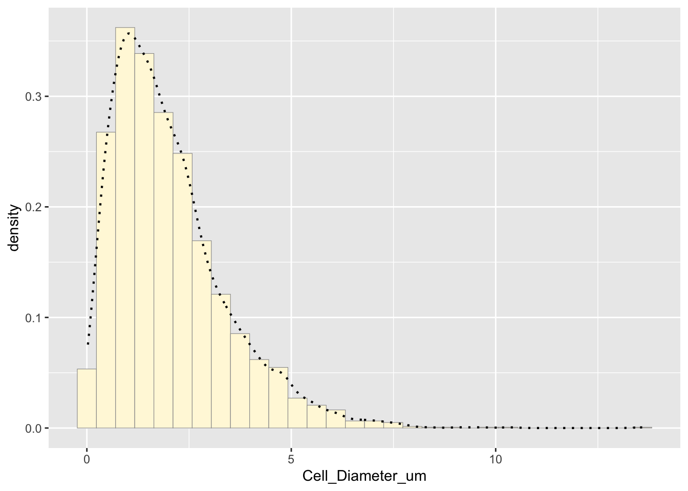
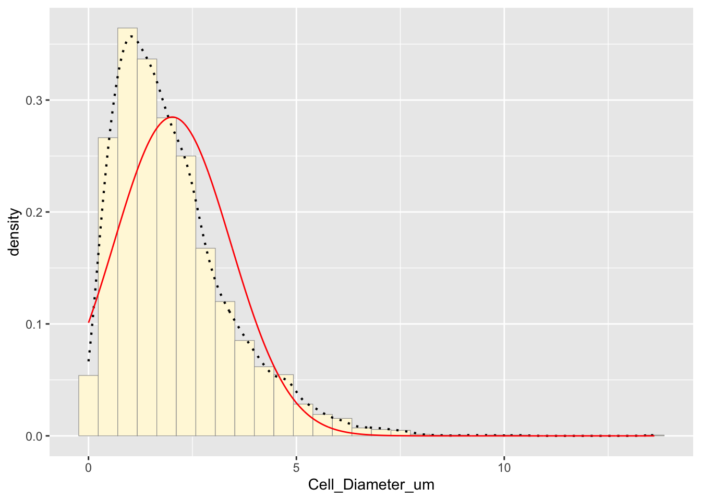
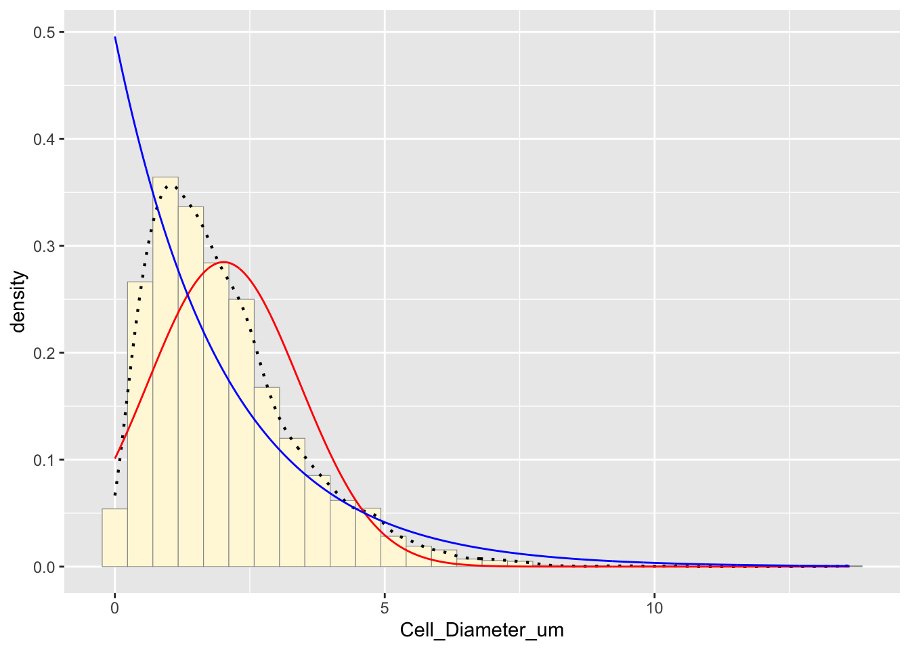
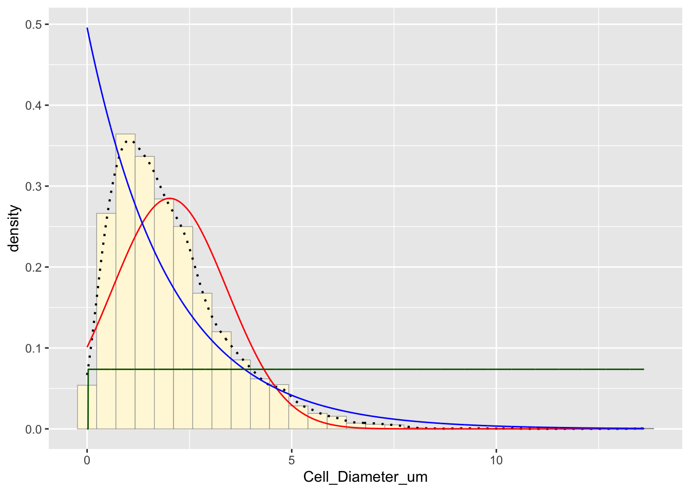
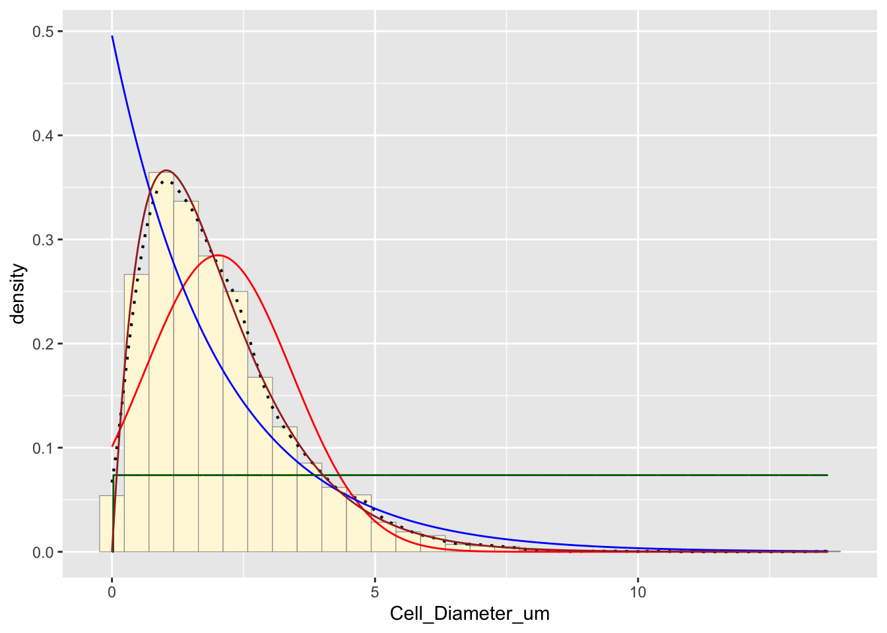
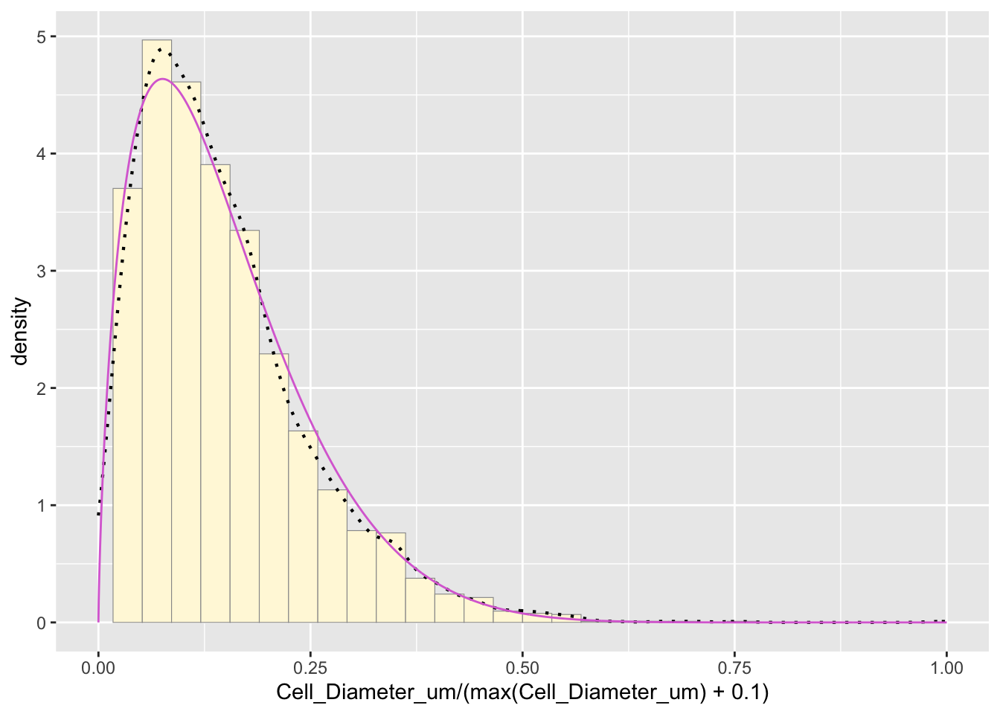
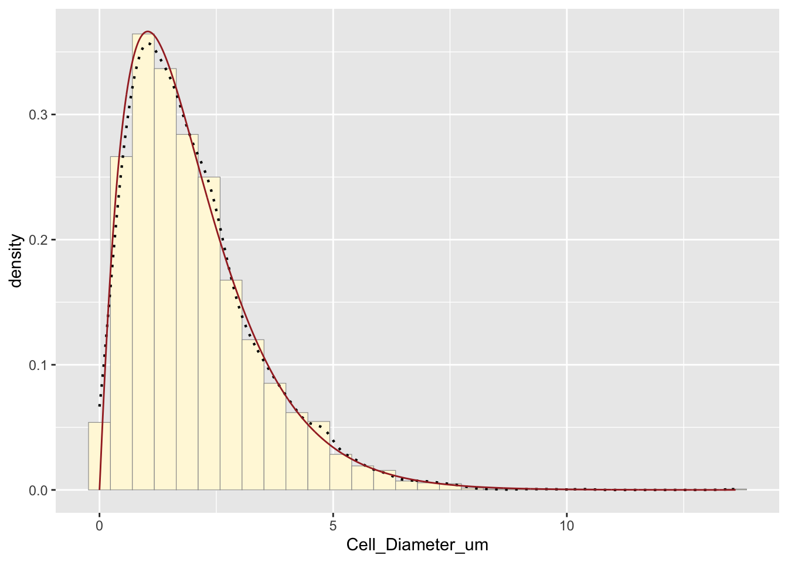
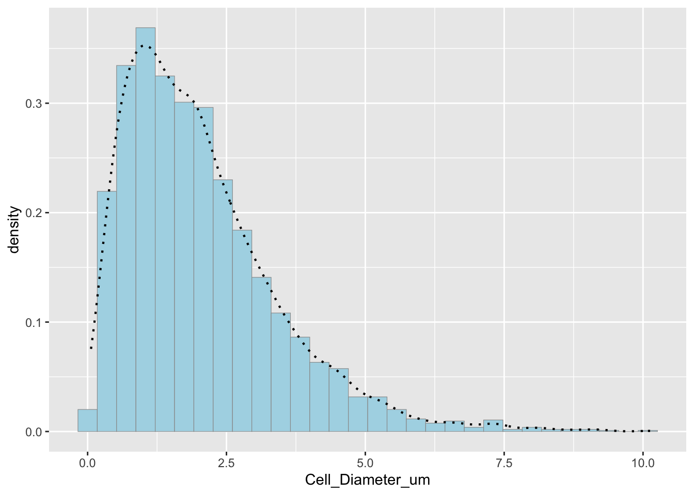

#Load necessary librarues
library(ggplot2)
library(MASS)
z <- read.table("cellular_biology_data.csv",header=TRUE,sep=",")
str(z)## 'data.frame': 3000 obs. of 2 variables:
## $ ID : int 1 2 3 4 5 6 7 8 9 10 ...
## $ Cell_Diameter_um: num 2.39 1.49 1.38 1.38 4.65 ...summary(z)## ID Cell_Diameter_um
## Min. : 1.0 Min. : 0.02586
## 1st Qu.: 750.8 1st Qu.: 0.99538
## Median :1500.5 Median : 1.70819
## Mean :1500.5 Mean : 2.01654
## 3rd Qu.:2250.2 3rd Qu.: 2.68111
## Max. :3000.0 Max. :13.61023Plot histogram of data
# Plot histogram of cell diameters
p1 <- ggplot(data=z, aes(x=Cell_Diameter_um, y=..density..)) +
geom_histogram(color="grey60", fill="cornsilk", size=0.2) +
geom_density(linetype="dotted", size=0.75) # Add empirical density curve## Warning: Using `size` aesthetic for lines was deprecated in ggplot2 3.4.0.
## ℹ Please use `linewidth` instead.
## This warning is displayed once every 8 hours.
## Call `lifecycle::last_lifecycle_warnings()` to see where this warning was
## generated.print(p1)## Warning: The dot-dot notation (`..density..`) was deprecated in ggplot2 3.4.0.
## ℹ Please use `after_stat(density)` instead.
## This warning is displayed once every 8 hours.
## Call `lifecycle::last_lifecycle_warnings()` to see where this warning was
## generated.## `stat_bin()` using `bins = 30`. Pick better value with `binwidth`. The histogram shows the distribution of the data. The empirical density curve helps visualize the spread and shape.
Fit statistical distribution
Fit a normal distribution
normPars <- fitdistr(z$Cell_Diameter_um, "normal")
meanML <- normPars$estimate["mean"]
sdML <- normPars$estimate["sd"]
# Plot normal probability density
xval <- seq(0, max(z$Cell_Diameter_um), len=length(z$Cell_Diameter_um))
stat <- stat_function(aes(x = xval, y = ..y..), fun = dnorm, colour="red",
n = length(z$Cell_Diameter_um), args = list(mean = meanML, sd = sdML))
p1 + stat## `stat_bin()` using `bins = 30`. Pick better value with `binwidth`. The red curve represents the normal distribution fit. The mean is slightly biased due to the lack of negative values
Fit an exponential distribution
expoPars <- fitdistr(z$Cell_Diameter_um, "exponential")
rateML <- expoPars$estimate["rate"]
# Plot exponential probability density
stat2 <- stat_function(aes(x = xval, y = ..y..), fun = dexp, colour="blue",
n = length(z$Cell_Diameter_um), args = list(rate=rateML))
p1 + stat + stat2## `stat_bin()` using `bins = 30`. Pick better value with `binwidth`. The blue curve represents the exponential distribution fit. Exponential distributions model skewed data, but I will compare this to other fits.
Fit a uniform distribution
stat3 <- stat_function(aes(x = xval, y = ..y..), fun = dunif, colour="darkgreen",
n = length(z$Cell_Diameter_um), args = list(min=min(z$Cell_Diameter_um), max=max(z$Cell_Diameter_um)))
p1 + stat + stat2 + stat3## `stat_bin()` using `bins = 30`. Pick better value with `binwidth`. The green curve represents the uniform distribution, but it does not seem to fit this data set well since it is not uniformly distributed.
Fit a gamma distribution
gammaPars <- fitdistr(z$Cell_Diameter_um, "gamma")## Warning in densfun(x, parm[1], parm[2], ...): NaNs produced
## Warning in densfun(x, parm[1], parm[2], ...): NaNs produced
## Warning in densfun(x, parm[1], parm[2], ...): NaNs producedshapeML <- gammaPars$estimate["shape"]
rateML <- gammaPars$estimate["rate"]
# Plot gamma probability density
stat4 <- stat_function(aes(x = xval, y = ..y..), fun = dgamma, colour="brown",
n = length(z$Cell_Diameter_um), args = list(shape=shapeML, rate=rateML))
p1 + stat + stat2 + stat3 + stat4## `stat_bin()` using `bins = 30`. Pick better value with `binwidth`. The brown curve represents the gamma distribution, which often fits biological data well and appears to be a good fit for this data set.
Fit a beta distribution
pSpecial <- ggplot(data=z, aes(x=Cell_Diameter_um/(max(Cell_Diameter_um) + 0.1), y=..density..)) +
geom_histogram(color="grey60", fill="cornsilk", size=0.2) +
xlim(c(0,1)) +
geom_density(size=0.75, linetype="dotted")
betaPars <- fitdistr(x=z$Cell_Diameter_um/max(z$Cell_Diameter_um + 0.1), start=list(shape1=1, shape2=2), "beta")## Warning in densfun(x, parm[1], parm[2], ...): NaNs produced
## Warning in densfun(x, parm[1], parm[2], ...): NaNs produced
## Warning in densfun(x, parm[1], parm[2], ...): NaNs produced
## Warning in densfun(x, parm[1], parm[2], ...): NaNs produced
## Warning in densfun(x, parm[1], parm[2], ...): NaNs producedshape1ML <- betaPars$estimate["shape1"]
shape2ML <- betaPars$estimate["shape2"]
statSpecial <- stat_function(aes(x = xval, y = ..y..), fun = dbeta, colour="orchid",
n = length(z$Cell_Diameter_um), args = list(shape1=shape1ML, shape2=shape2ML))
pSpecial + statSpecial## `stat_bin()` using `bins = 30`. Pick better value with `binwidth`.## Warning: Removed 2 rows containing missing values or values outside the scale range
## (`geom_bar()`). The purple curve represents the beta distribution, but since it assumes the largest point is the true upper bound, it is not the best fit
Determine the best-fitting distribution Based on the visual comparison, the gamma distribution appears to be the best fit. This makes sense because biological data often follow a gamma distribution due to natural variability.
Simulate a new data set using the best-fitting distribution
new_data <- rgamma(n=length(z$Cell_Diameter_um), shape=shapeML, rate=rateML)
df_new <- data.frame(Cell_Diameter_um=new_data)
# Plot histogram of simulated data
p2 <- ggplot(data=df_new, aes(x=Cell_Diameter_um, y=..density..)) +
geom_histogram(color="grey60", fill="lightblue", size=0.2) +
geom_density(linetype="dotted", size=0.75)
print(p2)## `stat_bin()` using `bins = 30`. Pick better value with `binwidth`.Comparison of original and simulated data
p1 + stat4 # Original data with gamma fit## `stat_bin()` using `bins = 30`. Pick better value with `binwidth`.
p2 # Simulated data## `stat_bin()` using `bins = 30`. Pick better value with `binwidth`.
How do the two histogram profiles compare? The simulated histogram closely matches the original data. The general shape and spread are similar. Some minor deviations occur due to randomness in sampling.
Does the model do a good job of simulating realistic data? Yes, the gamma model does a good job because the histogram profiles are very similar, gamma distributions are often appropriate for biological measurements, and the empirical and modeled density curves align well